CODING AGENTS AS PIXEL WORLD MODELS
traex/GPT-6.1-Sol · common50_0034
点击播放 · 原生 RGB 像素
逐轮保存的候选
回放视频、检查图与代码变化。
每份候选均可单独播放。实际图片检查记录在下方工具轨迹中。
候选 01播放与检查图
点击播放 · 原生 RGB 像素

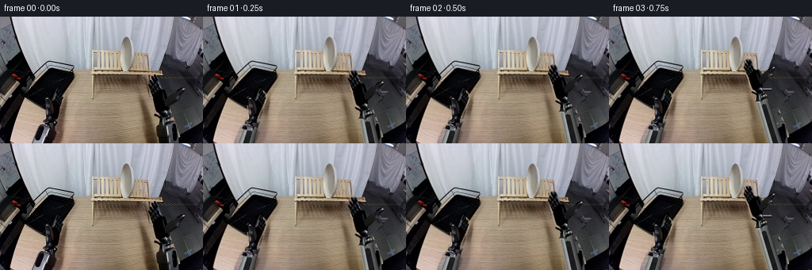
展开代码变化
--- 上一保存版本
+++ 本次保存版本
@@ -0,0 +1,215 @@
+from pathlib import Path
+import math
+import numpy as np
+from PIL import Image, ImageDraw, ImageFilter
+import artifact_io
+
+ROOT = Path(__file__).resolve().parent
+W,H=256,160
+S=4
+ORIG=Image.open(ROOT/'first_frame.png').convert('RGB')
+A=np.asarray(ORIG).astype(float)
+
+def polygon_mask(points, blur=0):
+ m=Image.new('L',(W*S,H*S)); ImageDraw.Draw(m).polygon([(round(x*S),round(y*S)) for x,y in points],fill=255)
+ if blur: m=m.filter(ImageFilter.GaussianBlur(blur*S))
+ return m.resize((W,H),Image.Resampling.LANCZOS)
+
+plate_outline=[(159,25.8),(161.1,26.8),(163.5,30.1),(165.1,34.5),(166.3,40),(166.7,47),(166.2,53.5),(164.4,60.3),(162,65.2),(159.2,69),(157,69.1),(155.2,66),(153.5,62.0),(152.6,57),(152,49),(152,41),(153,34.3),(155.3,28.8),(157.3,26.7)]
+left_outline=[(40,160),(42,153),(45,147),(48,140),(51,137),(55,137),(57,134),(54,133),(53.8,131),(56,128),(57.5,127),(58,121),(57,115),(56.6,109),(56.9,103),(58.3,101.5),(60.5,102.5),(63,105.7),(65,105.7),(66,102.2),(66.8,97.8),(69,92),(71.1,89.6),(73.7,89),(75.1,91.5),(75.4,95),(77.8,97),(79.2,101.5),(77.8,107),(74.2,115),(71.2,121.5),(69,126.5),(68,130),(68,134),(65,138),(66.2,143),(64,150),(62,155),(60,160)]
+right_outline=[(199,160),(197.3,153),(196.5,144),(197.8,138),(200,134),(201,130),(197,126),(194.3,123),(194,120),(192.3,114),(191.2,106),(189.5,99),(188,91),(186.7,87.5),(187,83),(189,81.7),(187.9,78),(188.3,76.3),(190,75.5),(191.5,78.6),(191,74),(192.5,73.2),(194.2,74.5),(195.2,79),(195.5,75.5),(197.3,74.4),(199.1,77),(200.5,83.7),(202,89.3),(204.8,91.6),(208,90.5),(211,94.2),(212.5,97.7),(220,94),(227,90.5),(231.6,89.3),(233.1,90.7),(232.3,93.7),(227.4,99),(220.6,106),(215.2,112.1),(212,117.8),(211,122.5),(214.5,127.2),(217,130.2),(216.4,134),(215,136.4),(218.1,140),(219.5,147.4),(221.4,160)]
+# Rebuild only the exposed background from neighbouring pixels in this same image.
+def background():
+ out=A.copy()
+ # Grain and illumination of the bare tabletop extrapolated from unobstructed rows.
+ xx=np.arange(W)
+ wood=np.zeros_like(A)
+ for y in range(H):
+ yy=max(76,y)
+ samples=A[yy,100:177]
+ c=np.polyfit(np.arange(100,177), samples, 1)
+ trend=xx[:,None]*c[0]+c[1]
+ noise=samples-(np.arange(100,177)[:,None]*c[0]+c[1])
+ grain=noise[(xx+17)%77]
+ wood[y]=trend+grain*.72
+ wood=np.clip(wood,0,255)
+ floor=np.zeros_like(A)
+ for y in range(H):
+ for x in range(W):
+ sx=min(253,max(232,x+28))
+ floor[y,x]=A[y,sx]
+ # Restore the black tray's patterned bed from another patch of its bed.
+ tray=A.copy()
+ for y in range(85,116):
+ for x in range(47,85):
+ sx=np.clip(x-18,34,73);sy=np.clip(y-12,68,98)
+ tray[y,x]=A[sy,sx]*.97
+ # Feathered shadows are also removed where the original hands used to be.
+ removal=Image.new('L',(W*S,H*S)); d=ImageDraw.Draw(removal)
+ for p in [left_outline,right_outline]:d.polygon([(x*S,y*S) for x,y in p],fill=255)
+ removal=removal.filter(ImageFilter.MaxFilter(9)).filter(ImageFilter.GaussianBlur(.45*S)).resize((W,H),Image.Resampling.LANCZOS)
+ rm=np.asarray(removal)/255.
+ yy,xx=np.mgrid[:H,:W]
+ edge=190+(yy-72)*.18
+ replacement=np.where((xx<edge)[...,None],wood,floor)
+ in_tray=(xx>=34)&(xx<=94)&(yy>=64)&(yy<112)&(xx+0.69*(yy-65)<95)&(xx>34+.95*(yy-97))
+ replacement=np.where(in_tray[...,None],tray,replacement)
+ out=out*(1-rm[...,None])+replacement*rm[...,None]
+ # Soft original forearm cast shadows on the otherwise empty tabletop.
+ shadow=Image.new('L',(W,H));sd=ImageDraw.Draw(shadow)
+ sd.polygon([(67,120),(81,123),(87,160),(64,160)],fill=180)
+ sd.polygon([(181,93),(192,96),(209,160),(183,160)],fill=170)
+ shadow=shadow.filter(ImageFilter.GaussianBlur(4))
+ sm=np.asarray(shadow)/255.
+ sm*=((xx<edge-2)&(~in_tray)&(yy>78))
+ out=out*(1-sm[...,None])+wood*sm[...,None]
+ # The absent plate reveals curtain above, and the repeated wooden slats below.
+ clean=A.copy()
+ for y in range(23,74):
+ for x in range(149,171):
+ if y < 42.5+(x-117)*.063:
+ clean[y,x]=A[y,x-19]
+ else:
+ clean[y,x]=A[max(0,y-2),x-23]
+ pm=np.asarray(polygon_mask(plate_outline,.45))/255
+ out=out*(1-pm[...,None])+clean*pm[...,None]
+ return Image.fromarray(np.uint8(np.clip(out,0,255)))
+
+BG=background()
+
+def sprite(poly):
+ img=ORIG.convert('RGBA'); img.putalpha(polygon_mask(poly,.12));return img
+
+# Photo-textured, rigid palm/finger assemblies; thumbs rotate about their mechanical knuckles.
+right_main=[(197,137),(200,132),(201,130),(197,126),(194.3,123),(194,120),(192.3,114),(191.2,106),(189.5,99),(188,91),(186.7,87.5),(187,83),(189,81.7),(187.9,78),(188.3,76.3),(190,75.5),(191.5,78.6),(191,74),(192.5,73.2),(194.2,74.5),(195.2,79),(195.5,75.5),(197.3,74.4),(199.1,77),(200.5,83.7),(202,89.3),(204.8,91.6),(208,90.5),(211,94.2),(212.7,100),(212,108),(210.6,113),(212,117.8),(211,122.5),(214.5,127.2),(217,130.2),(216.4,134),(214,137),(209,139)]
+right_thumb=[(205.8,108.7),(210.9,101),(218.5,94.9),(227,90.5),(231.6,89.3),(233.1,90.7),(232.3,93.7),(227.4,99),(220.6,106),(215.2,112.1),(210.3,116.6),(207.2,114.5)]
+left_main=[(49,141),(51,137),(55,137),(57,134),(54,133),(53.8,131),(56,128),(59,128),(62.5,124),(64.3,114),(64,110),(65,105.7),(66,102.2),(66.8,97.8),(69,92),(71.1,89.6),(73.7,89),(75.1,91.5),(75.4,95),(77.8,97),(79.2,101.5),(77.8,107),(74.2,115),(71.2,121.5),(69,126.5),(68,130),(68,134),(65,138),(64,142),(58,144)]
+left_thumb=[(56.2,129),(58,121),(57,115),(56.6,109),(56.9,103),(58.3,101.5),(60.5,102.5),(63,105.7),(64.4,110.2),(65.2,118),(63.5,125.5),(62,131.5)]
+RM=sprite(right_main); RT=sprite(right_thumb); LM=sprite(left_main); LT=sprite(left_thumb)
+PL=sprite(plate_outline)
+
+def mat_pose(pivot, dest, scale=1, angle=0):
+ a=math.radians(angle);c=math.cos(a)*scale;s=math.sin(a)*scale
+ M=np.array([[c,-s,0],[s,c,0],[0,0,1.0]])
+ M[:2,2]=np.array(dest)-M[:2,:2]@np.array(pivot)
+ return M
+
+def transform(layer,M):
+ inv=np.linalg.inv(M)
+ # Input native pixels; output supersampled for smooth optical edges.
+ inv[:2,:2]/=S
+ return layer.transform((W*S,H*S),Image.Transform.AFFINE,tuple(inv[:2].ravel()),Image.Resampling.BICUBIC)
+
+# Projected rigid forearm housing, using the actual metal finish as texture.
+def forearm(canvas, side, wrist, scale, angle):
+ # Its elbow and shoulder are below the cropped camera view. The same constant-
+ # width shell projects towards the wrist as the elbow articulates off camera.
+ p=np.array(wrist,dtype=float)
+ base=np.array([44.,192.]) if side=='L' else np.array([219.,190.])
+ axis=(base-p);length=np.linalg.norm(axis);u=axis/length;v=np.array([u[1],-u[0]])
+ yy,xx=np.mgrid[:H*S,:W*S];qx=xx/S-p[0];qy=yy/S-p[1]
+ z=qx*u[0]+qy*u[1];b=qx*v[0]+qy*v[1]
+ half=8.7*scale+np.clip(z/length,0,1)*2.0
+ # Strong bevels and graphite inset faithfully retain the industrial appearance.
+ q=b/half
+ cov=np.clip((1-abs(q))*S*half,0,1)*np.clip((z+2)*S,0,1)*np.clip((length-z)*S,0,1)
+ lit=np.sqrt(np.clip(1-q*q,0,1))
+ # White/silver side channel, dark body, metal seams and dense grain copied from frame.
+ col=np.zeros((H*S,W*S,3),float)
+ for k,c in enumerate([88,89,87]): col[:,:,k]=c*lit+17
+ silver=(q<-.38)&(q>-.88)
+ for k,c in enumerate([155,158,156]): col[:,:,k]=np.where(silver,c*lit+27,col[:,:,k])
+ rim=(q>-.98)&(q<-.90)
+ col[rim]=np.array([174,178,176])
+ panel=(q>-.32)&(q<.41)&(z>10)&(z<length-9)
+ panel*=((z-10)>np.abs(q)*5)
+ col[panel]=np.stack([18+9*lit[panel],19+10*lit[panel],21+9*lit[panel]],axis=-1)
+ top=(z>=0)&(z<5)
+ col[top]*=.46
+ band=(z>=5)&(z<7)
+ col[band]*=1.22
+ # Fine material variation taken directly from the visible photographed forearm.
+ tx=np.clip((53+q*6).astype(int),42,64);ty=np.clip((141+(z%18)).astype(int),140,159)
+ noise=A[ty,tx].mean(axis=-1);noise=(noise-np.median(noise))*.025
+ col+=noise[...,None]
+ shell=np.dstack([np.clip(col,0,255),cov*255]).astype(np.uint8)
+ canvas.alpha_composite(Image.fromarray(shell,'RGBA'))
+
+def draw_hand(canvas,side,wrist,scale,roll,close):
+ if side=='R':
+ m=mat_pose((208,131),wrist,scale,roll)
+ forearm(canvas,side,wrist,scale,roll)
+ canvas.alpha_composite(transform(RM,m))
+ mt=mat_pose((209,112),(209,112),1,-67*close)
+ canvas.alpha_composite(transform(RT,m@mt))
+ else:
+ m=mat_pose((62,133),wrist,scale,roll)
+ forearm(canvas,side,wrist,scale,roll)
+ canvas.alpha_composite(transform(LM,m))
+ mt=mat_pose((61,126),(61,126),1,43*close)
+ canvas.alpha_composite(transform(LT,m@mt))
+
+def ease(t):return t*t*(3-2*t)
+def keyed(i,keys):
+ if i<=keys[0][0]:return np.array(keys[0][1],float)
+ for (t0,v0),(t1,v1) in zip(keys[:-1],keys[1:]):
+ if i<=t1:
+ t=ease((i-t0)/(t1-t0));return np.array(v0)*(1-t)+np.array(v1)*t
+ return np.array(keys[-1][1],float)
+
+# Gripper positions are defined relative to the same plate pose during each hold,
+# so neither grasp slips while the plate is transferred or lowered.
+platekeys=[(0,[159.5,47.6,1,1,0]),(5,[159.5,47.6,1,1,0]),(7,[152,38,1.16,1,-3]),(10,[126,51,1.65,1.06,-5]),(12,[126,51,1.65,1.06,-5]),(14,[100,50,1.85,1.08,-8]),(16,[64,65,1.78,1.05,9]),(17,[64,67,1.78,1.05,9]),(19,[64,67,1.78,1.05,9])]
+rightkeys=[(0,[208,131,1,0,0]),(2,[201,113,.94,-3,0]),(4,[182,88,.77,-8,.05]),(5,[180,86,.76,-8,1]),(7,[174,76.4,.78,-8,1]),(10,[151,91,.8,-8,1]),(11,[151,91,.8,-8,1]),(12,[154,94,.81,-6,0]),(14,[189,115,.92,-2,0]),(17,[208,131,1,0,0]),(19,[208,131,1,0,0])]
+leftkeys=[(0,[62,133,1,0,0]),(6,[62,133,1,0,0]),(8,[78,113,.92,8,0]),(10,[97,91,.84,20,0]),(11,[97,91,.84,20,1]),(12,[97,91,.84,20,1]),(14,[71,90,.84,20,1]),(16,[35,105,.84,20,1]),(17,[35,107,.84,20,0]),(19,[62,133,1,0,0])]
+
+def plate_layer(p):
+ x,y,sx,sy,angle=p
+ # A circular ceramic object changes only its projected yaw, not its shape.
+ m=mat_pose((159.5,47.6),(x,y),1,angle)
+ m[:2,:2]=m[:2,:2]@np.diag([sx,sy])
+ m[:2,2]=np.array([x,y])-m[:2,:2]@np.array([159.5,47.6])
+ return transform(PL,m)
+
+def shadows(canvas,plate,lpose,rpose):
+ sh=Image.new('RGBA',canvas.size);d=ImageDraw.Draw(sh)
+ for side,pose in [('L',lpose),('R',rpose)]:
+ x,y,s,_,_=pose
+ b=(44,184) if side=='L' else (219,184)
+ d.line([(int((x+7)*S),int((y+9)*S)),(b[0]*S,b[1]*S)],fill=(26,23,18,49),width=int(16*s*S))
+ x,y,sx,sy,a=plate
+ d.ellipse(((x-10*sx)*S,(y+32*sy)*S,(x+11*sx)*S,(y+37*sy)*S),fill=(15,12,8,43))
+ sh=sh.filter(ImageFilter.GaussianBlur(4*S))
+ al=np.array(sh.getchannel('A'))
+ yy,xx=np.mgrid[:H*S,:W*S]; xx=xx/S;yy=yy/S
+ ontable=(yy>73)&(xx>25+(160-yy)*.23)&(xx<190+(yy-72)*.18)
+ al=(al*ontable).astype('uint8'); sh.putalpha(Image.fromarray(al));canvas.alpha_composite(sh)
+
+def generate():
+ frames=[np.asarray(ORIG,dtype=np.uint8)]
+ for i in range(1,20):
+ p=keyed(i,platekeys);r=keyed(i,rightkeys);l=keyed(i,leftkeys)
+ c=BG.resize((W*S,H*S),Image.Resampling.BICUBIC).convert('RGBA')
+ shadows(c,p,l,r)
+ # Upper arms are below the ceramic object; fingers are on its near side.
+ # This ordering prevents the object from appearing pasted over its grasp.
+ forearm(c,'L',l[:2],l[2],l[3]);forearm(c,'R',r[:2],r[2],r[3])
+ c.alpha_composite(plate_layer(p))
+ draw_hand(c,'R',r[:2],r[2],r[3],r[4])
+ draw_hand(c,'L',l[:2],l[2],l[3],l[4])
+ if i>=16:
+ # The drying tray's near wire lip occludes the seated lower ceramic rim.
+ rail=Image.new('RGBA',c.size);rd=ImageDraw.Draw(rail)
+ rd.line([(35*S,96*S),(71*S,111*S),(91*S,81*S)],fill=(17,20,20,240),width=round(.75*S))
+ # Only a short portion at the actual basket is brought to the foreground.
+ c.alpha_composite(rail)
+ frame=c.convert('RGB').resize((W,H),Image.Resampling.LANCZOS)
+ frames.append(np.asarray(frame,dtype=np.uint8))
+ frames=np.stack(frames)
+ artifact_io.save(frames,ROOT)
+ BG.save(ROOT/'.tmp/background.png')
+ for name,im in [('right_main',RM),('right_thumb',RT),('left_main',LM),('left_thumb',LT)]:
+ z=BG.convert('RGBA');z.alpha_composite(im);z.resize((1024,640)).save(ROOT/f'.tmp/{name}.png')
+ return frames
+
+if __name__=='__main__': generate()
候选 02播放与检查图
点击播放 · 原生 RGB 像素
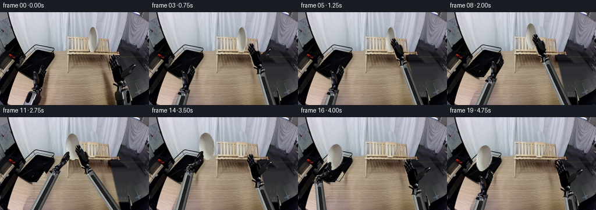
展开代码变化
--- 上一保存版本
+++ 本次保存版本
@@ -36,8 +36,14 @@
floor=np.zeros_like(A)
for y in range(H):
for x in range(W):
- sx=min(253,max(232,x+28))
- floor[y,x]=A[y,sx]
+ # Only the undisturbed rightmost tile surface is used for extrapolation.
+ if y<104: sx=238+(x%3);sy=y
+ elif y<125: sx=227+(x%5);sy=y
+ elif y<140: sx=229+(x%6);sy=y
+ elif y<146: sx=224+(x%4);sy=y
+ else: sx=231+(x%5);sy=min(y,155)
+ floor[y,x]=A[sy,sx]
+ floor=np.asarray(Image.fromarray(np.uint8(floor)).filter(ImageFilter.GaussianBlur(1.0))).astype(float)
# Restore the black tray's patterned bed from another patch of its bed.
tray=A.copy()
for y in range(85,116):
@@ -50,19 +56,26 @@
removal=removal.filter(ImageFilter.MaxFilter(9)).filter(ImageFilter.GaussianBlur(.45*S)).resize((W,H),Image.Resampling.LANCZOS)
rm=np.asarray(removal)/255.
yy,xx=np.mgrid[:H,:W]
- edge=190+(yy-72)*.18
- replacement=np.where((xx<edge)[...,None],wood,floor)
+ edge=187.5+(yy-72)*.223
+ blend=np.clip((edge-xx+1)/3,0,1)
+ replacement=wood*blend[...,None]+floor*(1-blend[...,None])
in_tray=(xx>=34)&(xx<=94)&(yy>=64)&(yy<112)&(xx+0.69*(yy-65)<95)&(xx>34+.95*(yy-97))
replacement=np.where(in_tray[...,None],tray,replacement)
out=out*(1-rm[...,None])+replacement*rm[...,None]
# Soft original forearm cast shadows on the otherwise empty tabletop.
shadow=Image.new('L',(W,H));sd=ImageDraw.Draw(shadow)
- sd.polygon([(67,120),(81,123),(87,160),(64,160)],fill=180)
- sd.polygon([(181,93),(192,96),(209,160),(183,160)],fill=170)
+ sd.polygon([(57,102),(77,100),(88,126),(91,160),(48,160)],fill=245)
+ sd.polygon([(179,83),(192,91),(209,160),(176,160)],fill=245)
shadow=shadow.filter(ImageFilter.GaussianBlur(4))
sm=np.asarray(shadow)/255.
sm*=((xx<edge-2)&(~in_tray)&(yy>78))
out=out*(1-sm[...,None])+wood*sm[...,None]
+ # Remove seams immediately outside the original right hand as well.
+ eraser=Image.new('L',(W,H));ed=ImageDraw.Draw(eraser)
+ ed.polygon([(185,74),(201,71),(218,87),(236,88),(235,98),(218,119),(220,143),(224,160),(195,160),(195,121),(187,102)],fill=255)
+ eraser=eraser.filter(ImageFilter.GaussianBlur(.8))
+ em=np.asarray(eraser)/255.
+ out=out*(1-em[...,None])+replacement*em[...,None]
# The absent plate reveals curtain above, and the repeated wooden slats below.
clean=A.copy()
for y in range(23,74):
@@ -71,7 +84,8 @@
clean[y,x]=A[y,x-19]
else:
clean[y,x]=A[max(0,y-2),x-23]
- pm=np.asarray(polygon_mask(plate_outline,.45))/255
+ pm0=polygon_mask(plate_outline,0).filter(ImageFilter.MaxFilter(5)).filter(ImageFilter.GaussianBlur(.45))
+ pm=np.asarray(pm0)/255
out=out*(1-pm[...,None])+clean*pm[...,None]
return Image.fromarray(np.uint8(np.clip(out,0,255)))
@@ -159,9 +173,9 @@
# Gripper positions are defined relative to the same plate pose during each hold,
# so neither grasp slips while the plate is transferred or lowered.
-platekeys=[(0,[159.5,47.6,1,1,0]),(5,[159.5,47.6,1,1,0]),(7,[152,38,1.16,1,-3]),(10,[126,51,1.65,1.06,-5]),(12,[126,51,1.65,1.06,-5]),(14,[100,50,1.85,1.08,-8]),(16,[64,65,1.78,1.05,9]),(17,[64,67,1.78,1.05,9]),(19,[64,67,1.78,1.05,9])]
+platekeys=[(0,[159.5,47.6,1,1,0]),(5,[159.5,47.6,1,1,0]),(7,[152,38,1.16,1,-3]),(10,[126,51,1.65,1.06,-5]),(12,[126,51,1.65,1.06,-5]),(14,[100,50,1.85,1.08,-8]),(16,[64,69,1.78,1.05,9]),(17,[64,71,1.78,1.05,9]),(19,[64,71,1.78,1.05,9])]
rightkeys=[(0,[208,131,1,0,0]),(2,[201,113,.94,-3,0]),(4,[182,88,.77,-8,.05]),(5,[180,86,.76,-8,1]),(7,[174,76.4,.78,-8,1]),(10,[151,91,.8,-8,1]),(11,[151,91,.8,-8,1]),(12,[154,94,.81,-6,0]),(14,[189,115,.92,-2,0]),(17,[208,131,1,0,0]),(19,[208,131,1,0,0])]
-leftkeys=[(0,[62,133,1,0,0]),(6,[62,133,1,0,0]),(8,[78,113,.92,8,0]),(10,[97,91,.84,20,0]),(11,[97,91,.84,20,1]),(12,[97,91,.84,20,1]),(14,[71,90,.84,20,1]),(16,[35,105,.84,20,1]),(17,[35,107,.84,20,0]),(19,[62,133,1,0,0])]
+leftkeys=[(0,[62,133,1,0,0]),(6,[62,133,1,0,0]),(8,[78,113,.92,8,0]),(10,[97,91,.84,20,0]),(11,[97,91,.84,20,1]),(12,[97,91,.84,20,1]),(14,[71,90,.84,20,1]),(16,[35,109,.84,20,1]),(17,[35,111,.84,20,0]),(19,[62,133,1,0,0])]
def plate_layer(p):
x,y,sx,sy,angle=p
候选 03播放与检查图
点击播放 · 原生 RGB 像素
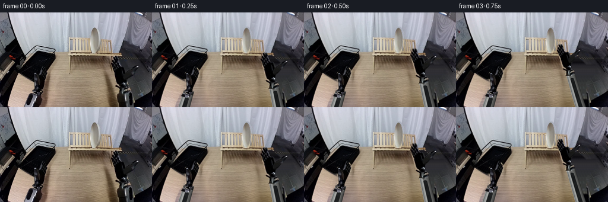
展开代码变化
--- 上一保存版本
+++ 本次保存版本
@@ -81,7 +81,8 @@
for y in range(23,74):
for x in range(149,171):
if y < 42.5+(x-117)*.063:
- clean[y,x]=A[y,x-19]
+ t=(x-149)/22
+ clean[y,x]=A[y,149]*(1-t)+A[y,171]*t
else:
clean[y,x]=A[max(0,y-2),x-23]
pm0=polygon_mask(plate_outline,0).filter(ImageFilter.MaxFilter(5)).filter(ImageFilter.GaussianBlur(.45))
@@ -147,7 +148,7 @@
noise=A[ty,tx].mean(axis=-1);noise=(noise-np.median(noise))*.025
col+=noise[...,None]
shell=np.dstack([np.clip(col,0,255),cov*255]).astype(np.uint8)
- canvas.alpha_composite(Image.fromarray(shell,'RGBA'))
+ canvas.alpha_composite(Image.fromarray(shell))
def draw_hand(canvas,side,wrist,scale,roll,close):
if side=='R':
@@ -221,6 +222,8 @@
frames.append(np.asarray(frame,dtype=np.uint8))
frames=np.stack(frames)
artifact_io.save(frames,ROOT)
+ previews=[Image.fromarray(f) for f in frames]
+ previews[0].save(ROOT/'preview.gif',save_all=True,append_images=previews[1:],duration=250,loop=0)
BG.save(ROOT/'.tmp/background.png')
for name,im in [('right_main',RM),('right_thumb',RT),('left_main',LM),('left_thumb',LT)]:
z=BG.convert('RGBA');z.alpha_composite(im);z.resize((1024,640)).save(ROOT/f'.tmp/{name}.png')
可观测工具轨迹
实际执行的命令与返回图片。
命令 1exit 0
/bin/bash -lc "ls -la && cat prompt.txt && printf '\\n---RULES---\\n' && cat GENERATION_RULES.md"
命令 2exit 0
/bin/bash -lc "cat task_spec.json && cat artifact_io.py && python - <<'PY'
from PIL import Image
im=Image.open('first_frame.png');print(im.mode,im.size);im.resize((1024,640)).save('.tmp/enlarged.png')
PY"命令 3exit 0
/bin/bash -lc "python - <<'PY'
from PIL import Image, ImageDraw
im=Image.open('first_frame.png').resize((1024,640));d=ImageDraw.Draw(im)
for x in range(0,256,10):
d.line((x*4,0,x*4,640),fill=(255,0,0,80),width=1);d.text((x*4+1,3),str(x),fill='red')
for y in range(0,160,10):
d.line((0,y*4,1024,y*4),fill=(255,0,0,80),width=1);d.text((1,y*4+1),str(y),fill='red')
im.save('.tmp/grid.png')
PY"命令 4exit 0
/bin/bash -lc "python - <<'PY'
from PIL import Image
im=Image.open('first_frame.png')
im.crop((180,70,240,145)).resize((480,600)).save('.tmp/right.png')
im.crop((43,85,80,142)).resize((370,570)).save('.tmp/left.png')
im.crop((145,20,175,74)).resize((300,540)).save('.tmp/plate.png')
PY"命令 5exit 0
/bin/bash -lc "cat > generate.py <<'PY'
from pathlib import Path
import math
import numpy as np
from PIL import Image, ImageDraw, ImageFilter
import artifact_io
ROOT = Path(__file__).resolve().parent
W,H=256,160
S=4
ORIG=Image.open(ROOT/'first_frame.png').convert('RGB')
A=np.asarray(ORIG).astype(float)
def polygon_mask(points, blur=0):
m=Image.new('L',(W*S,H*S)); ImageDraw.Draw(m).polygon([(round(x*S),round(y*S)) for x,y in points],fill=255)
if blur: m=m.filter(ImageFilter.GaussianBlur(blur*S))
return m.resize((W,H),Image.Resampling.LANCZOS)
plate_outline=[(159,25.8),(161.1,26.8),(163.5,30.1),(165.1,34.5),(166.3,40),(166.7,47),(166.2,53.5),(164.4,60.3),(162,65.2),(159.2,69),(157,69.1),(155.2,66),(153.5,62.0),(152.6,57),(152,49),(152,41),(153,34.3),(155.3,28.8),(157.3,26.7)]
left_outline=[(40,160),(42,153),(45,147),(48,140),(51,137),(55,137),(57,134),(54,133),(53.8,131),(56,128),(57.5,127),(58,121),(57,115),(56.6,109),(56.9,103),(58.3,101.5),(60.5,102.5),(63,105.7),(65,105.7),(66,102.2),(66.8,97.8),(69,92),(71.1,89.6),(73.7,89),(75.1,91.5),(75.4,95),(77.8,97),(79.2,101.5),(77.8,107),(74.2,115),(71.2,121.5),(69,126.5),(68,130),(68,134),(65,138),(66.2,143),(64,150),(62,155),(60,160)]
right_outline=[(199,160),(197.3,153),(196.5,144),(197.8,138),(200,134),(201,130),(197,126),(194.3,123),(194,120),(192.3,114),(191.2,106),(189.5,99),(188,91),(186.7,87.5),(187,83),(189,81.7),(187.9,78),(188.3,76.3),(190,75.5),(191.5,78.6),(191,74),(192.5,73.2),(194.2,74.5),(195.2,79),(195.5,75.5),(197.3,74.4),(199.1,77),(200.5,83.7),(202,89.3),(204.8,91.6),(208,90.5),(211,94.2),(212.5,97.7),(220,94),(227,90.5),(231.6,89.3),(233.1,90.7),(232.3,93.7),(227.4,99),(220.6,106),(215.2,112.1),(212,117.8),(211,122.5),(214.5,127.2),(217,130.2),(216.4,134),(215,136.4),(218.1,140),(219.5,147.4),(221.4,160)]
# Rebuild only the exposed background from neighbouring pixels in this same image.
def background():
out=A.copy()
# Grain and illumination of the bare tabletop extrapolated from unobstructed rows.
xx=np.arange(W)
wood=np.zeros_like(A)
for y in range(H):
yy=max(76,y)
samples=A[yy,100:177]
c=np.polyfit(np.arange(100,177), samples, 1)
trend=xx[:,None]*c[0]+c[1]
noise=samples-(np.arange(100,177)[:,None]*c[0]+c[1])
grain=noise[(xx+17)%77]
wood[y]=trend+grain*.72
wood=np.clip(wood,0,255)
floor=np.zeros_like(A)
for y in range(H):
for x in range(W):
sx=min(253,max(232,x+28))
floor[y,x]=A[y,sx]
# Restore the black tray's patterned bed from another patch of its bed.
tray=A.copy()
for y in range(85,116):
for x in range(47,85):
sx=np.clip(x-18,34,73);sy=np.clip(y-12,68,98)
tray[y,x]=A[sy,sx]*.97
# Feathered shadows are also removed where the original hands used to be.
removal=Image.new('L',(W*S,H*S)); d=ImageDraw.Draw(removal)
for p in [left_outline,right_outline]:d.polygon([(x*S,y*S) for x,y in p],fill=255)
removal=removal.filter(ImageFilter.MaxFilter(9)).filter(ImageFilter.GaussianBlur(.45*S)).resize((W,H),Image.Resampling.LANCZOS)
rm=np.asarray(removal)/255.
yy,xx=np.mgrid[:H,:W]
edge=190+(yy-72)*.18
replacement=np.where((xx<edge)[...,None],wood,floor)
in_tray=(xx>=34)&(xx<=94)&(yy>=64)&(yy<112)&(xx+0.69*(yy-65)<95)&(xx>34+.95*(yy-97))
replacement=np.where(in_tray[...,None],tray,replacement)
out=out*(1-rm[...,None])+replacement*rm[...,None]
# Soft original forearm cast shadows on the otherwise empty tabletop.
shadow=Image.new('L',(W,H));sd=ImageDraw.Draw(shadow)
sd.polygon([(67,120),(81,123),(87,160),(64,160)],fill=180)
sd.polygon([(181,93),(192,96),(209,160),(183,160)],fill=170)
shadow=shadow.filter(ImageFilter.GaussianBlur(4))
sm=np.asarray(shadow)/255.
sm*=((xx<edge-2)&(~in_tray)&(yy>78))
out=out*(1-sm[...,None])+wood*sm[...,None]
# The absent plate reveals curtain above, and the repeated wooden slats below.
clean=A.copy()
for y in range(23,74):
for x in range(149,171):
if y < 42.5+(x-117)*.063:
clean[y,x]=A[y,x-19]
else:
clean[y,x]=A[max(0,y-2),x-23]
pm=np.asarray(polygon_mask(plate_outline,.45))/255
out=out*(1-pm[...,None])+clean*pm[...,None]
return Image.fromarray(np.uint8(np.clip(out,0,255)))
BG=background()
def sprite(poly):
img=ORIG.convert('RGBA'); img.putalpha(polygon_mask(poly,.12));return img
# Photo-textured, rigid palm/finger assemblies; thumbs rotate about their mechanical knuckles.
right_main=[(197,137),(200,132),(201,130),(197,126),(194.3,123),(194,120),(192.3,114),(191.2,106),(189.5,99),(188,91),(186.7,87.5),(187,83),(189,81.7),(187.9,78),(188.3,76.3),(190,75.5),(191.5,78.6),(191,74),(192.5,73.2),(194.2,74.5),(195.2,79),(195.5,75.5),(197.3,74.4),(199.1,77),(200.5,83.7),(202,89.3),(204.8,91.6),(208,90.5),(211,94.2),(212.7,100),(212,108),(210.6,113),(212,117.8),(211,122.5),(214.5,127.2),(217,130.2),(216.4,134),(214,137),(209,139)]
right_thumb=[(205.8,108.7),(210.9,101),(218.5,94.9),(227,90.5),(231.6,89.3),(233.1,90.7),(232.3,93.7),(227.4,99),(220.6,106),(215.2,112.1),(210.3,116.6),(207.2,114.5)]
left_main=[(49,141),(51,137),(55,137),(57,134),(54,133),(53.8,131),(56,128),(59,128),(62.5,124),(64.3,114),(64,110),(65,105.7),(66,102.2),(66.8,97.8),(69,92),(71.1,89.6),(73.7,89),(75.1,91.5),(75.4,95),(77.8,97),(79.2,101.5),(77.8,107),(74.2,115),(71.2,121.5),(69,126.5),(68,130),(68,134),(65,138),(64,142),(58,144)]
left_thumb=[(56.2,129),(58,121),(57,115),(56.6,109),(56.9,103),(58.3,101.5),(60.5,102.5),(63,105.7),(64.4,110.2),(65.2,118),(63.5,125.5),(62,131.5)]
RM=sprite(right_main); RT=sprite(right_thumb); LM=sprite(left_main); LT=sprite(left_thumb)
PL=sprite(plate_outline)
def mat_pose(pivot, dest, scale=1, angle=0):
a=math.radians(angle);c=math.cos(a)*scale;s=math.sin(a)*scale
M=np.array([[c,-s,0],[s,c,0],[0,0,1.0]])
M[:2,2]=np.array(dest)-M[:2,:2]@np.array(pivot)
return M
def transform(layer,M):
inv=np.linalg.inv(M)
# Input native pixels; output supersampled for smooth optical edges.
inv[:2,:2]/=S
return layer.transform((W*S,H*S),Image.Transform.AFFINE,tuple(inv[:2].ravel()),Image.Resampling.BICUBIC)
# Projected rigid forearm housing, using the actual metal finish as texture.
def forearm(canvas, side, wrist, scale, angle):
# Its elbow and shoulder are below the cropped camera view. The same constant-
# width shell projects towards the wrist as the elbow articulates off camera.
p=np.array(wrist,dtype=float)
base=np.array([44.,192.]) if side=='L' else np.array([219.,190.])
axis=(base-p);length=np.linalg.norm(axis);u=axis/length;v=np.array([u[1],-u[0]])
yy,xx=np.mgrid[:H*S,:W*S];qx=xx/S-p[0];qy=yy/S-p[1]
z=qx*u[0]+qy*u[1];b=qx*v[0]+qy*v[1]
half=8.7*scale+np.clip(z/length,0,1)*2.0
# Strong bevels and graphite inset faithfully retain the industrial appearance.
q=b/half
cov=np.clip((1-abs(q))*S*half,0,1)*np.clip((z+2)*S,0,1)*np.clip((length-z)*S,0,1)
lit=np.sqrt(np.clip(1-q*q,0,1))
# White/silver side channel, dark body, metal seams and dense grain copied from frame.
col=np.zeros((H*S,W*S,3),float)
for k,c in enumerate([88,89,87]): col[:,:,k]=c*lit+17
silver=(q<-.38)&(q>-.88)
for k,c in enumerate([155,158,156]): col[:,:,k]=np.where(silver,c*lit+27,col[:,:,k])
rim=(q>-.98)&(q<-.90)
col[rim]=np.array([174,178,176])
panel=(q>-.32)&(q<.41)&(z>10)&(z<length-9)
panel*=((z-10)>np.abs(q)*5)
col[panel]=np.stack([18+9*lit[panel],19+10*lit[panel],21+9*lit[panel]],axis=-1)
top=(z>=0)&(z<5)
col[top]*=.46
band=(z>=5)&(z<7)
col[band]*=1.22
# Fine material variation taken directly from the visible photographed forearm.
tx=np.clip((53+q*6).astype(int),42,64);ty=np.clip((141+(z%18)).astype(int),140,159)
noise=A[ty,tx].mean(axis=-1);noise=(noise-np.median(noise))*.025
col+=noise[...,None]
shell=np.dstack([np.clip(col,0,255),cov*255]).astype(np.uint8)
canvas.alpha_composite(Image.fromarray(shell,'RGBA'))
def draw_hand(canvas,side,wrist,scale,roll,close):
if side=='R':
m=mat_pose((208,131),wrist,scale,roll)
forearm(canvas,side,wrist,scale,roll)
canvas.alpha_composite(transform(RM,m))
mt=mat_pose((209,112),(209,112),1,-67*close)
canvas.alpha_composite(transform(RT,m@mt))
else:
m=mat_pose((62,133),wrist,scale,roll)
forearm(canvas,side,wrist,scale,roll)
canvas.alpha_composite(transform(LM,m))
mt=mat_pose((61,126),(61,126),1,43*close)
canvas.alpha_composite(transform(LT,m@mt))
def ease(t):return t*t*(3-2*t)
def keyed(i,keys):
if i<=keys[0][0]:return np.array(keys[0][1],float)
for (t0,v0),(t1,v1) in zip(keys[:-1],keys[1:]):
if i<=t1:
t=ease((i-t0)/(t1-t0));return np.array(v0)*(1-t)+np.array(v1)*t
return np.array(keys[-1][1],float)
# Gripper positions are defined relative to the same plate pose during each hold,
# so neither grasp slips while the plate is transferred or lowered.
platekeys=[(0,[159.5,47.6,1,1,0]),(5,[159.5,47.6,1,1,0]),(7,[152,38,1.16,1,-3]),(10,[126,51,1.65,1.06,-5]),(12,[126,51,1.65,1.06,-5]),(14,[100,50,1.85,1.08,-8]),(16,[64,65,1.78,1.05,9]),(17,[64,67,1.78,1.05,9]),(19,[64,67,1.78,1.05,9])]
rightkeys=[(0,[208,131,1,0,0]),(2,[201,113,.94,-3,0]),(4,[182,88,.77,-8,.05]),(5,[180,86,.76,-8,1]),(7,[174,76.4,.78,-8,1]),(10,[151,91,.8,-8,1]),(11,[151,91,.8,-8,1]),(12,[154,94,.81,-6,0]),(14,[189,115,.92,-2,0]),(17,[208,131,1,0,0]),(19,[208,131,1,0,0])]
leftkeys=[(0,[62,133,1,0,0]),(6,[62,133,1,0,0]),(8,[78,113,.92,8,0]),(10,[97,91,.84,20,0]),(11,[97,91,.84,20,1]),(12,[97,91,.84,20,1]),(14,[71,90,.84,20,1]),(16,[35,105,.84,20,1]),(17,[35,107,.84,20,0]),(19,[62,133,1,0,0])]
def plate_layer(p):
x,y,sx,sy,angle=p
# A circular ceramic object changes only its projected yaw, not its shape.
m=mat_pose((159.5,47.6),(x,y),1,angle)
m[:2,:2]=m[:2,:2]@np.diag([sx,sy])
m[:2,2]=np.array([x,y])-m[:2,:2]@np.array([159.5,47.6])
return transform(PL,m)
def shadows(canvas,plate,lpose,rpose):
sh=Image.new('RGBA',canvas.size);d=ImageDraw.Draw(sh)
for side,pose in [('L',lpose),('R',rpose)]:
x,y,s,_,_=pose
b=(44,184) if side=='L' else (219,184)
d.line([(int((x+7)*S),int((y+9)*S)),(b[0]*S,b[1]*S)],fill=(26,23,18,49),width=int(16*s*S))
x,y,sx,sy,a=plate
d.ellipse(((x-10*sx)*S,(y+32*sy)*S,(x+11*sx)*S,(y+37*sy)*S),fill=(15,12,8,43))
sh=sh.filter(ImageFilter.GaussianBlur(4*S))
al=np.array(sh.getchannel('A'))
yy,xx=np.mgrid[:H*S,:W*S]; xx=xx/S;yy=yy/S
ontable=(yy>73)&(xx>25+(160-yy)*.23)&(xx<190+(yy-72)*.18)
al=(al*ontable).astype('uint8'); sh.putalpha(Image.fromarray(al));canvas.alpha_composite(sh)
def generate():
frames=[np.asarray(ORIG,dtype=np.uint8)]
for i in range(1,20):
p=keyed(i,platekeys);r=keyed(i,rightkeys);l=keyed(i,leftkeys)
c=BG.resize((W*S,H*S),Image.Resampling.BICUBIC).convert('RGBA')
shadows(c,p,l,r)
# Upper arms are below the ceramic object; fingers are on its near side.
# This ordering prevents the object from appearing pasted over its grasp.
forearm(c,'L',l[:2],l[2],l[3]);forearm(c,'R',r[:2],r[2],r[3])
c.alpha_composite(plate_layer(p))
draw_hand(c,'R',r[:2],r[2],r[3],r[4])
draw_hand(c,'L',l[:2],l[2],l[3],l[4])
if i>=16:
# The drying tray's near wire lip occludes the seated lower ceramic rim.
rail=Image.new('RGBA',c.size);rd=ImageDraw.Draw(rail)
rd.line([(35*S,96*S),(71*S,111*S),(91*S,81*S)],fill=(17,20,20,240),width=round(.75*S))
# Only a short portion at the actual basket is brought to the foreground.
c.alpha_composite(rail)
frame=c.convert('RGB').resize((W,H),Image.Resampling.LANCZOS)
frames.append(np.asarray(frame,dtype=np.uint8))
frames=np.stack(frames)
artifact_io.save(frames,ROOT)
BG.save(ROOT/'.tmp/background.png')
for name,im in [('right_main',RM),('right_thumb',RT),('left_main',LM),('left_thumb',LT)]:
z=BG.convert('RGBA');z.alpha_composite(im);z.resize((1024,640)).save(ROOT/f'.tmp/{name}.png')
return frames
if __name__=='__main__': generate()
PY
python generate.py"命令 6exit 0
/bin/bash -lc "python - <<'PY'
from PIL import Image
for f in ['frames/11.png','frames/05.png','.tmp/background.png','frames/19.png','frames/01.png']:
im=Image.open(f); im.resize((1024,640)).save('.tmp/'+f.split('/')[-1].replace('.png','_big.png'))
PY"命令 7exit 0
/bin/bash -lc "python - <<'PY'
import numpy as np
from PIL import Image
im=np.asarray(Image.open('first_frame.png'))
for y in [80,90,100,110,120,130,140,150]:
print(y,[(x,im[y,x].tolist()) for x in [190,205,220,230,240,250]])
PY"命令 8exit 0
/bin/bash -lc "python - <<'PY'
from PIL import Image,ImageDraw
im=Image.open('first_frame.png').crop((148,22,173,72)).resize((300,600),Image.Resampling.NEAREST);d=ImageDraw.Draw(im)
for x in range(25):
d.line((x*12,0,x*12,600),fill=(200,0,0),width=1)
if x%2==0:d.text((x*12,1),str(x+148),fill='red')
for y in range(50):
if y%2==0:
d.line((0,y*12,300,y*12),fill=(200,0,0),width=1);d.text((0,y*12),str(y+22),fill='red')
im.save('.tmp/plategrid.png')
PY"命令 9exit 0
/bin/bash -lc "python - <<'PY'
p='generate.py'
s=open(p).read()
s=s.replace('pm=np.asarray(polygon_mask(plate_outline,.45))/255','pm0=polygon_mask(plate_outline,0).filter(ImageFilter.MaxFilter(5)).filter(ImageFilter.GaussianBlur(.45))\\n pm=np.asarray(pm0)/255')
# remove original shadows generously, and build constant perspective floor to remove thumb remnants
s=s.replace('floor=np.zeros_like(A)\\n for y in range(H):\\n for x in range(W):\\n sx=min(253,max(232,x+28))\\n floor[y,x]=A[y,sx]', '''floor=np.zeros_like(A)
for y in range(H):
for x in range(W):
# Only the undisturbed rightmost tile surface is used for extrapolation.
if y<104: sx=238+(x%3);sy=y
elif y<125: sx=227+(x%5);sy=y
elif y<140: sx=229+(x%6);sy=y
elif y<146: sx=224+(x%4);sy=y
else: sx=231+(x%5);sy=min(y,155)
floor[y,x]=A[sy,sx]
floor=np.asarray(Image.fromarray(np.uint8(floor)).filter(ImageFilter.GaussianBlur(1.0))).astype(float)''')
s=s.replace('edge=190+(yy-72)*.18','edge=187.5+(yy-72)*.223')
s=s.replace('replacement=np.where((xx<edge)[...,None],wood,floor)','''blend=np.clip((edge-xx+1)/3,0,1)
replacement=wood*blend[...,None]+floor*(1-blend[...,None])''')
s=s.replace(\"sd.polygon([(67,120),(81,123),(87,160),(64,160)],fill=180)\",\"sd.polygon([(57,102),(77,100),(88,126),(91,160),(48,160)],fill=245)\")
s=s.replace(\"sd.polygon([(181,93),(192,96),(209,160),(183,160)],fill=170)\",\"sd.polygon([(179,83),(192,91),(209,160),(176,160)],fill=245)\")
s=s.replace('out=out*(1-sm[...,None])+wood*sm[...,None]','''out=out*(1-sm[...,None])+wood*sm[...,None]
# Remove seams immediately outside the original right hand as well.
eraser=Image.new('L',(W,H));ed=ImageDraw.Draw(eraser)
ed.polygon([(185,74),(201,71),(218,87),(236,88),(235,98),(218,119),(220,143),(224,160),(195,160),(195,121),(187,102)],fill=255)
eraser=eraser.filter(ImageFilter.GaussianBlur(.8))
em=np.asarray(eraser)/255.
out=out*(1-em[...,None])+replacement*em[...,None]''')
s=s.replace('(16,[64,65,1.78,1.05,9]),(17,[64,67,1.78,1.05,9]),(19,[64,67,1.78,1.05,9])', '(16,[64,69,1.78,1.05,9]),(17,[64,71,1.78,1.05,9]),(19,[64,71,1.78,1.05,9])')
s=s.replace('(16,[35,105,.84,20,1]),(17,[35,107,.84,20,0])','(16,[35,109,.84,20,1]),(17,[35,111,.84,20,0])')
open(p,'w').write(s)
PY
python generate.py"命令 10exit 0
/bin/bash -lc "python - <<'PY'
from PIL import Image
im=Image.open('.tmp/background.png');im.resize((1024,640)).save('.tmp/bg2.png')
PY"命令 11exit 0
/bin/bash -lc "command -v ffmpeg || true; python - <<'PY'
from PIL import Image
import numpy as np
im=np.asarray(Image.open('first_frame.png'))
f=np.asarray(Image.open('frames/00.png'))
print('frame00 identical:',np.array_equal(im,f))
print('packed output', np.load('pixels.npz')['pixels'].shape)
PY"命令 12exit 0
/bin/bash -lc "python - <<'PY'
p='generate.py';s=open(p).read();s=s.replace('clean[y,x]=A[y,x-19]','t=(x-149)/22\\n clean[y,x]=A[y,149]*(1-t)+A[y,171]*t')
# Save compact animation preview alongside native RGB data.
s=s.replace(\"artifact_io.save(frames,ROOT)\",\"artifact_io.save(frames,ROOT)\\n previews=[Image.fromarray(f) for f in frames]\\n previews[0].save(ROOT/'preview.gif',save_all=True,append_images=previews[1:],duration=250,loop=0)\")
s=s.replace(\"Image.fromarray(shell,'RGBA')\",\"Image.fromarray(shell)\")
open(p,'w').write(s)
PY
python generate.py"命令 13exit 0
/bin/bash -lc "python - <<'PY'
from pathlib import Path
from PIL import Image
import numpy as np
files=sorted(Path('frames').glob('*.png'))
frames=np.stack([np.asarray(Image.open(p)) for p in files])
assert frames.shape==(20,160,256,3) and frames.dtype==np.uint8
assert np.array_equal(frames[0],np.asarray(Image.open('first_frame.png').convert('RGB')))
x=np.load('pixels.npz')['pixels'];assert x.shape==(160,256,20)
print('Verified: 20 RGB frames, 256x160, exact first frame. Outputs ready.')
PY"视觉工具实际返回图片 1
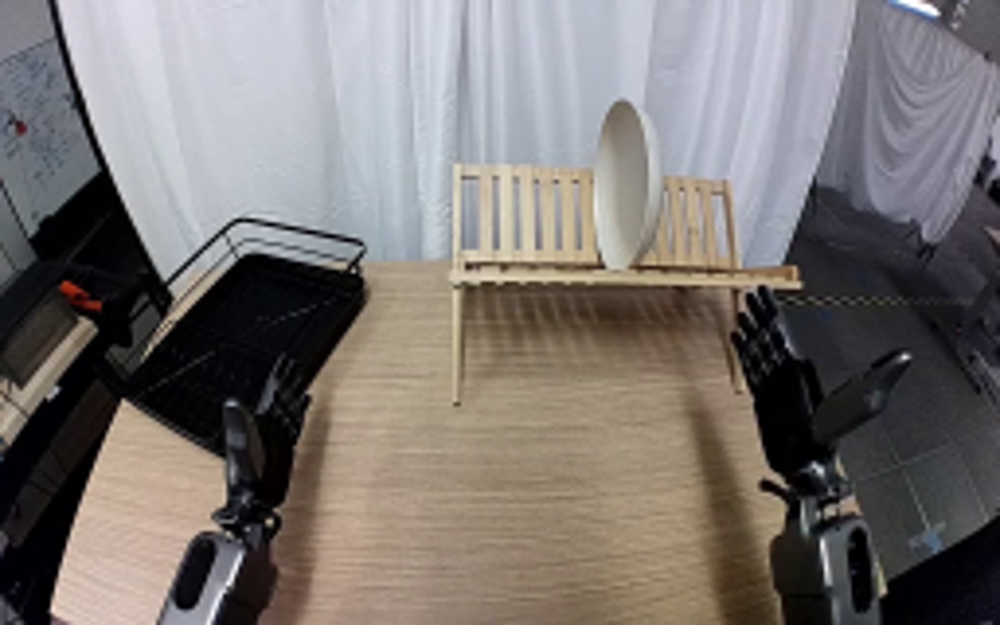
视觉工具实际返回图片 2
视觉工具实际返回图片 3
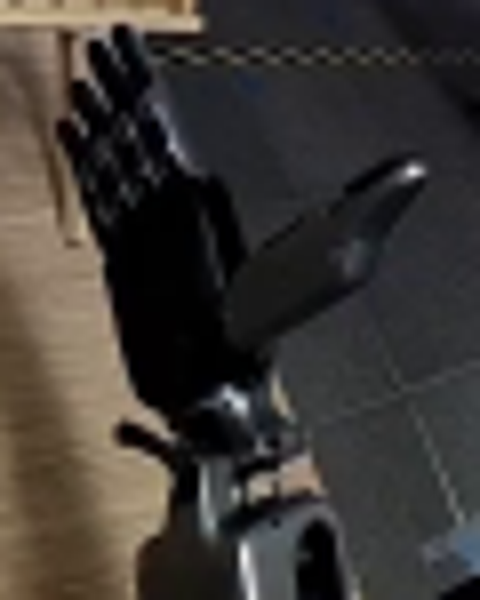
视觉工具实际返回图片 4
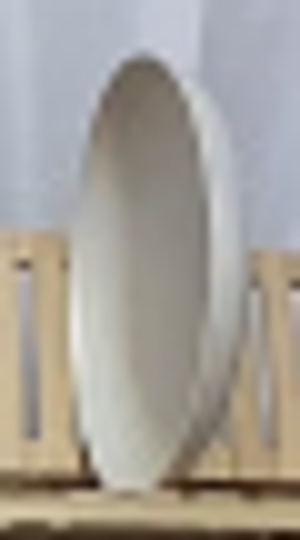
视觉工具实际返回图片 5
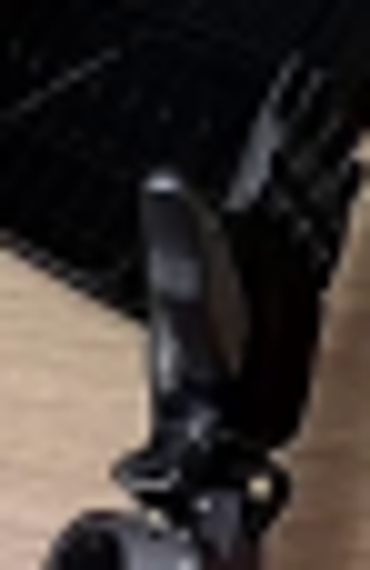
视觉工具实际返回图片 6
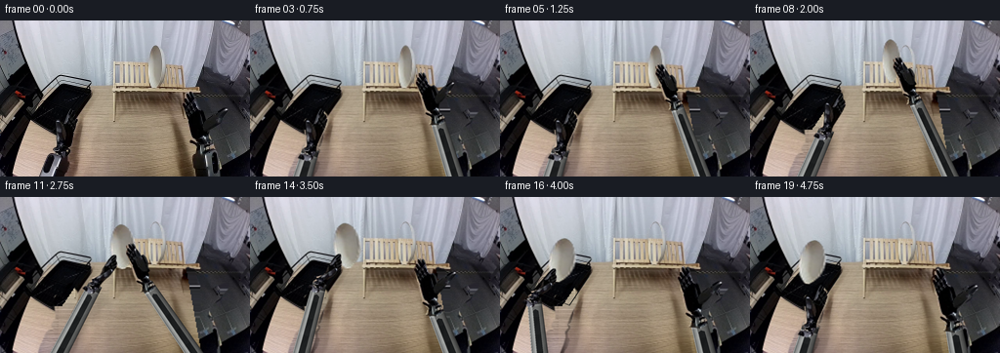
视觉工具实际返回图片 7
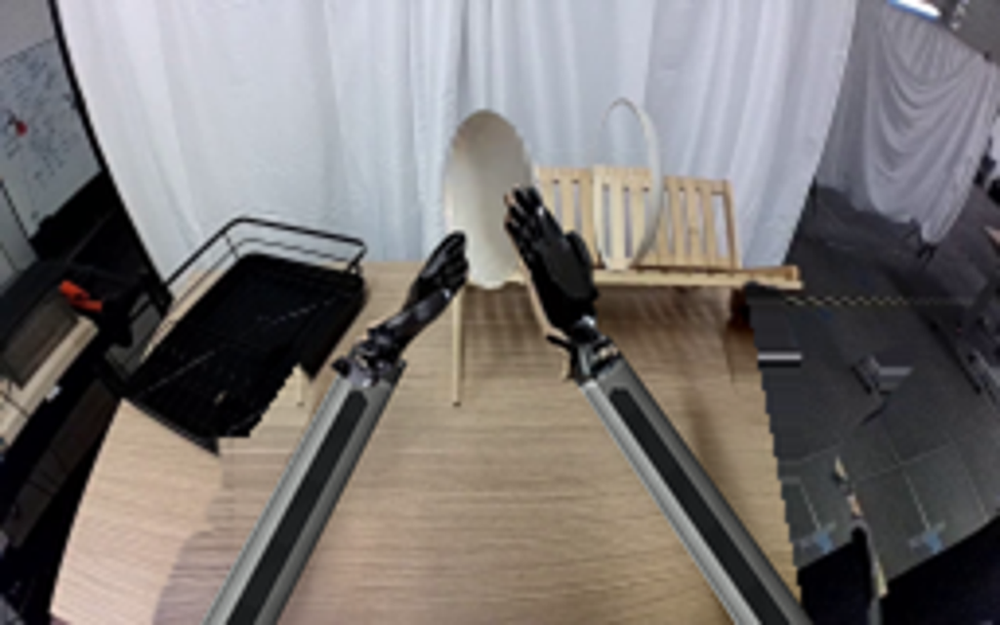
视觉工具实际返回图片 8
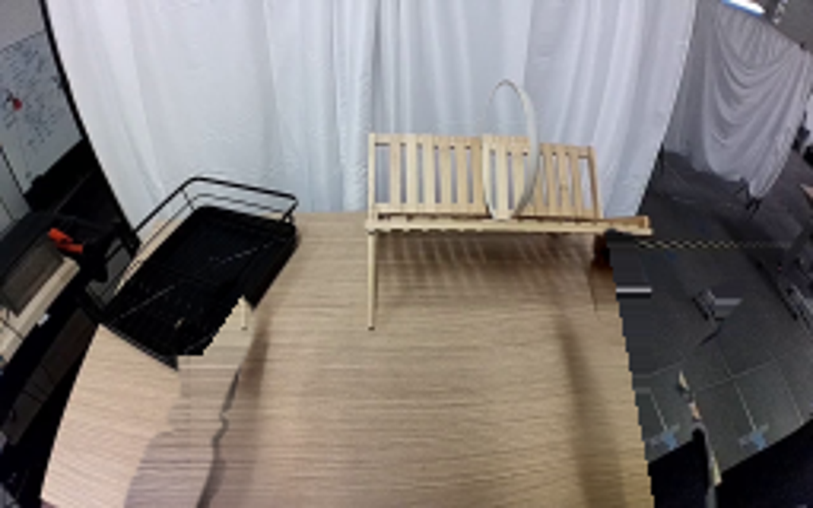
视觉工具实际返回图片 9
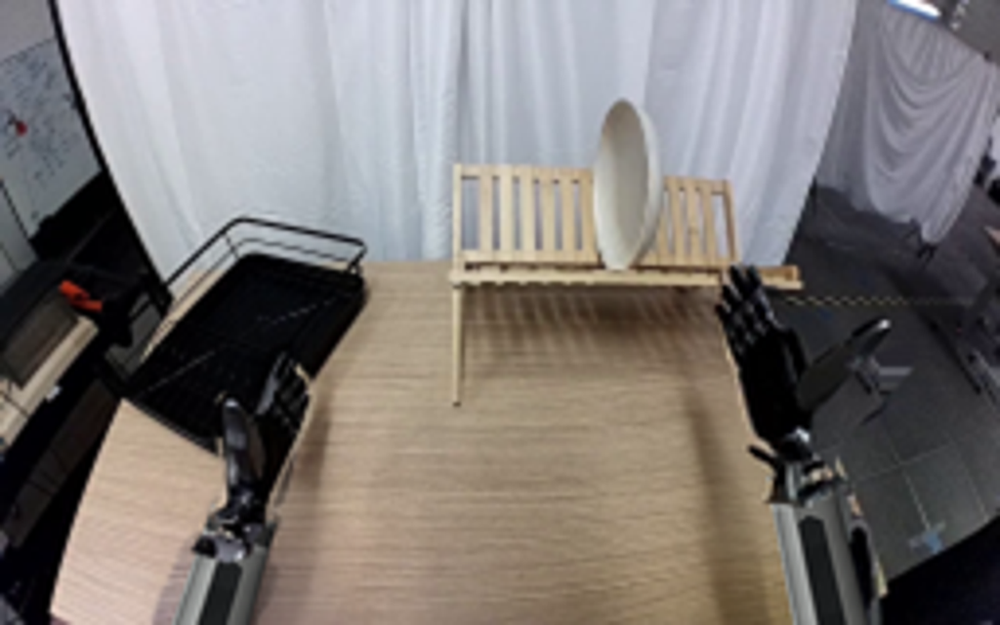
视觉工具实际返回图片 10
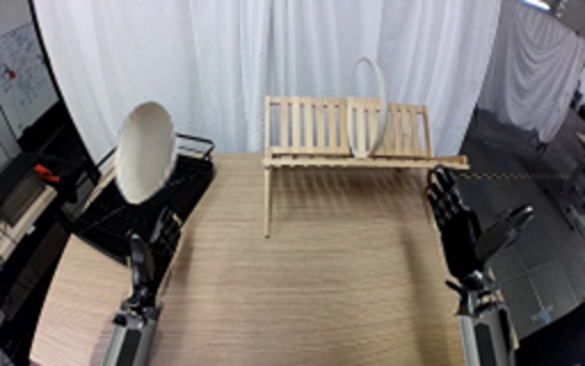
视觉工具实际返回图片 11
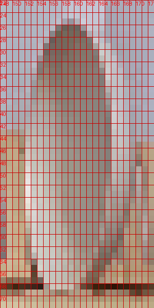
视觉工具实际返回图片 12

视觉工具实际返回图片 13
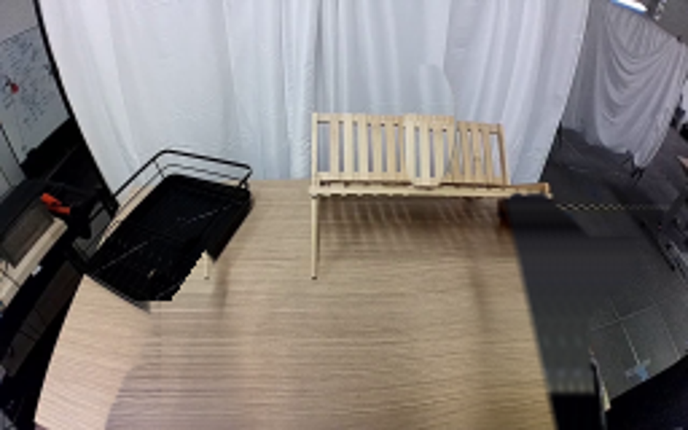
保存候选 3 份；完成命令 13 次；可验证图片返回 13 张。原始 API 响应与完整日志保留在本地。